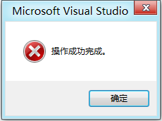
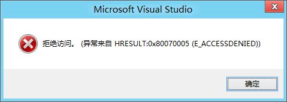
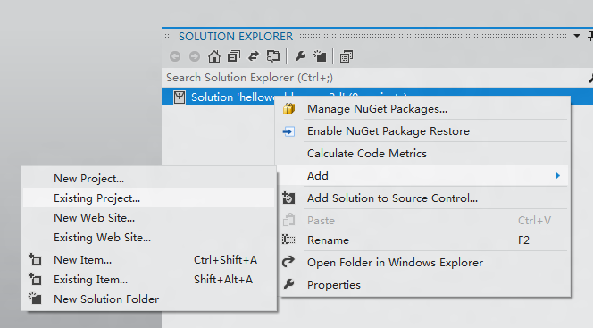

Open vs2011, Click menu: File->New->Project..
Choose Templates->Visual C++-> Windows Metro style, select the Cocos2d template to create project like followed snapshot:
Here,we create at "d:\Projects\"

Click Ok, then you may see followed snapshot, this seems a bug of visual studio, so we just ignore them and click OK. After all close Visual Studio.


Copy "d:\cocos2dx-win8\CreateProject.bat" to "d:\Projects\helloworld-cocos2d"
Edit CreateProject.bat,set appropriate variable
set PROJECT_NAME=helloworld-cocos2d
set COCOS2D_DIR=d:\cocos2dx-win8
set PROJECT_DIR=d:\Projects\helloworld-cocos2d
Run CreateProject.bat, it will copy some src code files and some resources into "d:Projectshelloworld-cocos2d". After this, your will see dir below

Open "d:\Projects\helloworld-cocos2d\helloworld-cocos2d.sln" and add "d:\Projects\helloworld-cocos2d\helloworld-cocos2d\helloworld-cocos2d.vcxproj" into.

Done!